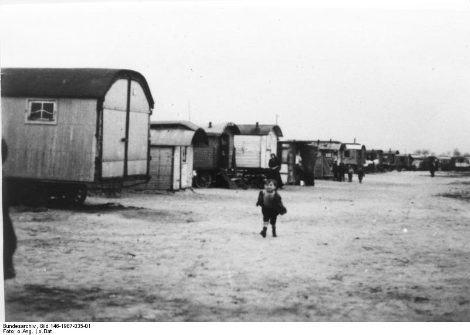

II.1 — Direkter Vergleich
Was die Welt sah — und was gleichzeitig geschah
Bewege den Regler, um zwischen den zwei Realitäten des Sommers 1936 zu wechseln.


Die Bühne (links)
Das Olympiastadion — 150.000 Zuschauer (nach zeitgenössischen Angaben), Fahnenmeer, perfekte Choreographie. Ein Bild, das um die Welt ging.
Die Realität (rechts)
Das Zwangslager Marzahn — 8 km entfernt. Ohne Sanitäranlagen, ohne Anklage. Für viele der erste Schritt nach Auschwitz.